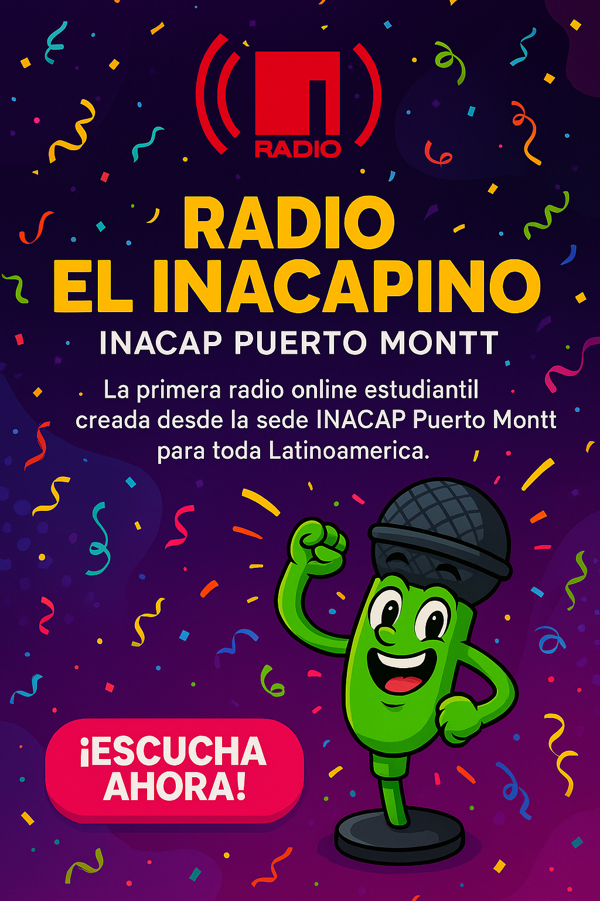

Radio El Inacapino es el primer proyecto de radio online estudiantil de INACAP Puerto Montt, pensado, diseñado y producido por estudiantes. Nuestra misión es conectar a la comunidad a través de una experiencia interactiva, informativa y entretenida.
✨ Características
- Programas en vivo transmitidos por Twitch.
- Señal continua en Zeno Radio con AutoDJ.
- Noticias, concursos, mensajes motivacionales y entrevistas.
- Participación estudiantil y contenido generado por alumnos.
üöÄ Objetivos
- Fomentar el sentido de pertenencia de la comunidad INACAP.
- Visibilizar el talento y actividades estudiantiles.
- Promover el uso de tecnología para la comunicación positiva.
- Expandir el proyecto a las 29 sedes de INACAP en Chile.
üë§ Coordinador General
Cristián Riffo Araya
Electricista, Educador y Emprendedor Tecnológico
Coordinador de Actividades Temporales - INACAP Puerto Montt
◀ Volver al sitio principal